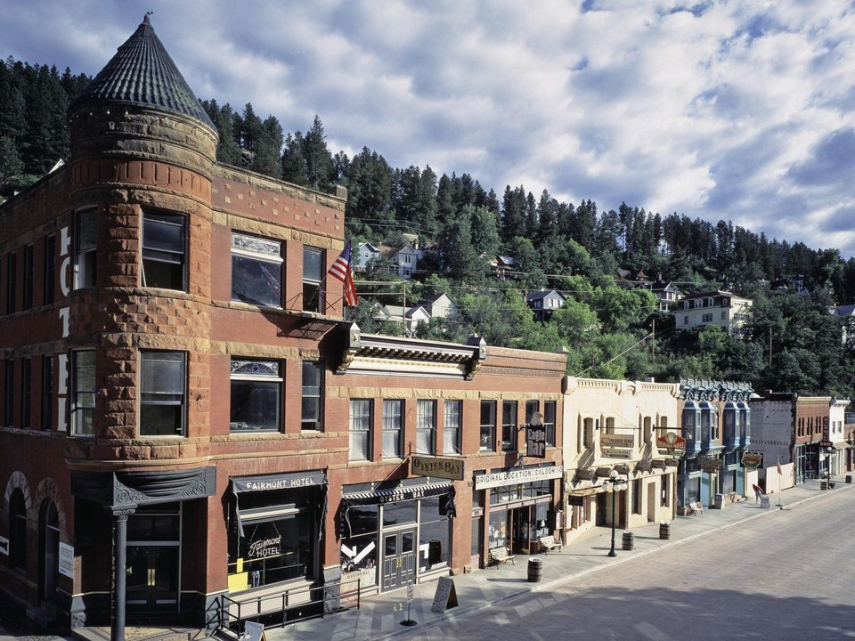

Deadwood · Since 1895
Historic Bullock Hotel
Built by Deadwood’s first sheriff.
Official details for Historic Bullock HotelAn Old West town and a canyon of waterfalls.
Deadwood is the gold-rush town of Wild Bill Hickok and Calamity Jane, its brick Main Street restored and lively. Stay in the 1895 Bullock Hotel, toast at Saloon No. 10, visit Wild Bill’s grave on Mount Moriah, then drive Spearfish Canyon past Roughlock and Bridal Veil falls.

Time illustration: direct distance at 150 KTAS plus 15 minutes for departure and arrival, matching the discovery page. Use ForeFlight for your actual flight plan.
Check the weekend weather at both ends → Flight category, your minimums and the crosswind on the best runway.
KSPF, Black Hills Airport–Clyde Ice Field, is a non-towered field about 20 minutes from Deadwood.
Black Hills Airport, Spearfish, SD
Confirm FBO hours, fees and ground transportation. No live fuel price is shown.
High plains weather: strong winds, summer thunderstorms and fast-moving winter systems. Check density altitude in summer. About 1320 nm from Myrtle Beach: a long cross-country day with two fuel stops. Plan four or more nights, or break the trip with an overnight on the way.
Rates and availability need travel dates. The Sturgis Rally in August fills the area.
Built by Deadwood’s first sheriff.
Official details for Historic Bullock HotelA historic hotel on Main Street.
Official details for Silverado FranklinA log lodge in the canyon near Roughlock Falls.
Deadwood listing for Spearfish Canyon LodgePrices and availability for your dates, through our partner Stay22. This is an affiliate link: we may earn a commission at no cost to you. The picks above are never paid.
Reserve weekend dinners.
The saloon of Wild Bill’s last hand, with a steakhouse upstairs.
Official details for Saloon No. 10Dinner in the historic hotel.
Official details for Bullock HotelLunch at Spearfish Canyon Lodge.
Official details for Latchstring RestaurantHistory in town, nature in the canyon.
This prototype links to the local visitor site. It does not yet match events to your travel dates.
A historic rodeo and parade.
Deadwood for Days of ’76Very busy; book far ahead or avoid.
Golden aspens in the canyon.
Check the local calendar when choosing a weekend, and confirm dates and tickets with the organizer.
A sample long weekend: Old West history and the canyon. This is a long flight; plan four or more nights. No bookings or availability confirmed.
A day trip isn't practical from the Southeast; this is a long-flight destination.
Walk Main Street.
Spearfish Canyon waterfalls.
Land at KSPF, subject to weather, your fuel stops and your actual flight plan.
Walk Main Street.
Dinner at Saloon No. 10.
Spearfish Canyon waterfalls.
Mount Moriah Cemetery.
Dinner at the Bullock.
A drive toward Mount Rushmore.
Allow time at the airport.
A long trip east; start early and plan your fuel stops.
Spearfish Canyon waterfalls.
Mount Moriah Cemetery.
Dinner at the Bullock.
These details make the difference between an appealing list and a usable getaway.
Lodging first.
About 1,320 nm. Plan two fuel stops and four or more nights.
Deadwood has casinos; the history is the draw.
June to October.
Picks and links reviewed by WingAway Weekends. Hours, prices, menus and availability change often, so confirm directly with each place before booking. Spotted something out of date, or have a favorite we missed? Email us at hello@wingawayweekends.com.
WingAway Weekends helps you discover the destination. Use ForeFlight and current official aviation information for route, performance, weather, NOTAMs and preflight decisions. Flight planning and PIC responsibility stay with the pilot.